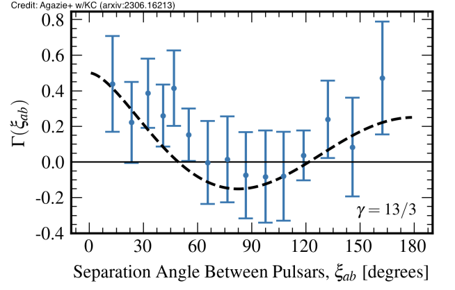
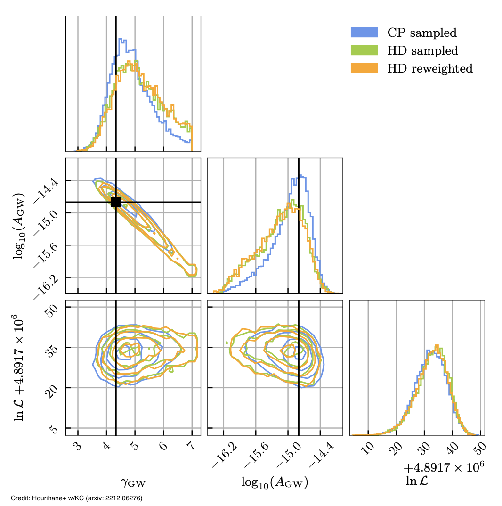
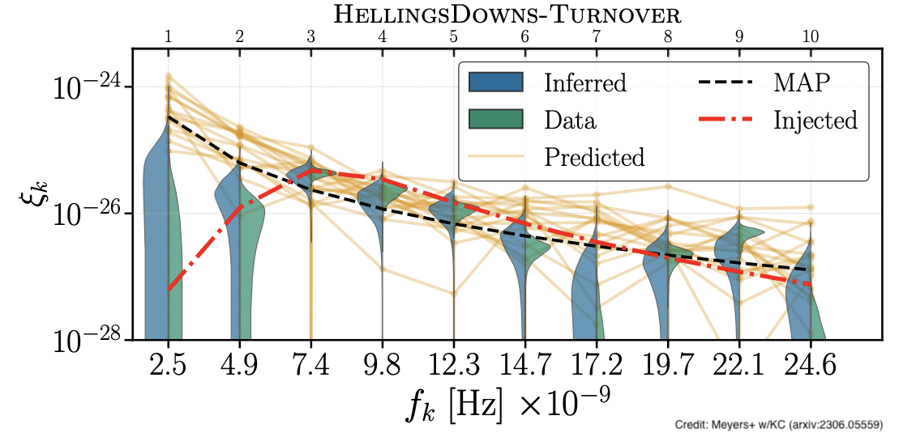

Pulsar timing arrays and NANOGrav
Pulsar timing arrays use pulsars as galactic-scale detectors to observe nanoHertz gravitational waves. The target source for pulsar timing arrays is a stochastic background emitted by an ensemble of supermassive black hole binaries at the center of galaxies or early universe processes. Gravitational waves impart a spatially correlated offset on the arrival times of pulses, described by the Hellings and Downs curce. Using an array of dozens of pulsars and decade-long datasets, those correlations were recently observed. Our team works within the NANOGrav collaboration to analyze and interpret observational data as well as construct new data analysis methods and algorithms.
Analyzing decade-long data sets from dozens of pulsars is time- and resource-consuming. Caltech graduate student Sophie Hourihane led a study that proposed a faster but still accurate alternative. Rather than analyzing the data with a computationally expensive model that explicitly includes spatial correlations, we instead employ an approximate model and then reweight the posterior to the full, expensive model. The plot exemplifies the method and its robustness, now routinely used on real data.
Unlike LIGO which observes invididual compact binary mergers, NANOGrav observed a combined stochastic signal from numerous sources. Determining the source origin of this stochastic signal is challenging, since we only have access to its spectral shape. Led by Caltech postdoctoral scholar Pat Meyers, we proposed a method to assess whether our models for the signal spectrum and spatial correlations are robust. Based on posterior predictive checks, our method compares the observed data to predicted data, shown in the plot for a simulated data set.